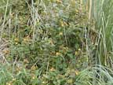
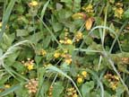
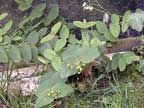
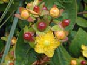
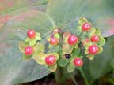

Tutsan
Hypericum androsaemum
Other names
Description
Small shrub about 1m high. Leaves ovate and obtuse. Flowers yellow with five petals and long stamens. The only St. John’s wort to produce berries.
Similar plants
Other members of the St John’s wort family.
Distribution
Common all over NZ in waste ground and forest edges. Seeds probably spread by birds.
Toxin
Dubious toxicity suggesting skin disease. Reported to have killed cattle in Auckland, but feeding trials produced no signs. May contain hypericin, but reports are contradictory. The plant is not palatable and rarely ingested.
Species affected
Cattle and humans.
Clinical signs acute
Reported to produce skin ailments (Photosensitivity?).
Clinical signs chronic
Post mortem signs
Evidence of ingestion and skin disease (photosensitivity?)
Diagnosis
History and plants in stomach.
Differential diagnosis
Treatment
Symptomatic
Prognosis
Prevention
References
Conner H.E. The Poisonous Plants In New Zealand. 1992. GP Publications Ltd, Wellington
 plant |
 |
|
|
 |
 |
|
|
 |
||
|
|
|
|